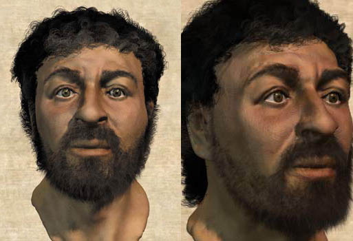

White is a spectrum
by phil on Sunday May 9, 2010 4:43 PM
regionalism
I got a kick when the Discovery Channel reconstructed how Jesus probably looked like at the time:

Other facts that may ruffle the feathers of the Western imagination:
- Did you know that there are indigenous white people? They live in North Norway and are called The Sami. They are blond-haired, blue-eyed, but they live off the land.
- There are white people in the North-West Frontier Province of Pakistan, near where we're currently bombing.
- Most knights of the Middle Ages were brown too, being from Spain and Italy.
Comments
Troy said on May 10, 2010 8:39 AM:
Where did you get the image from? I was trying to find it on Discovery's site but had no luck. Would love to share the article with my "Jesus was white" buddies.
Philip Dhingra said on May 10, 2010 10:56 AM:
I just did a Google Image search for words like Jesus brown, Jesus reconstruction brown.